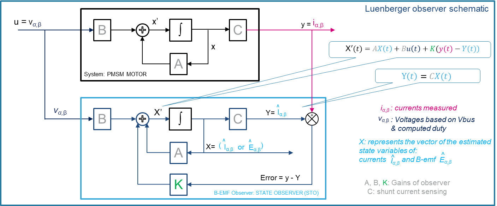
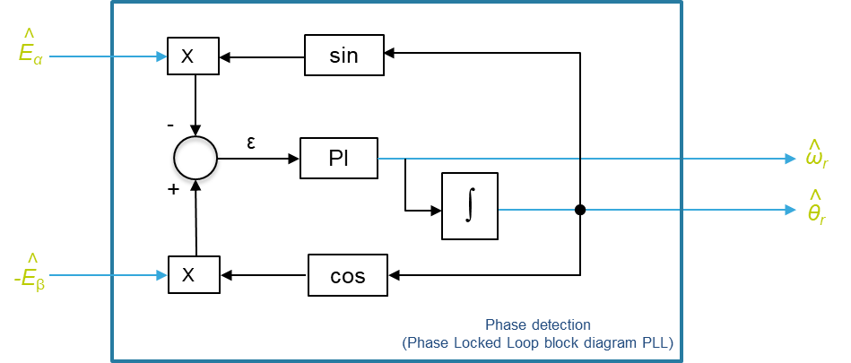
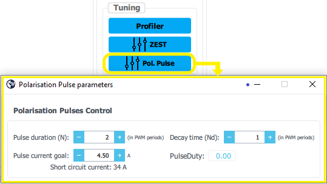
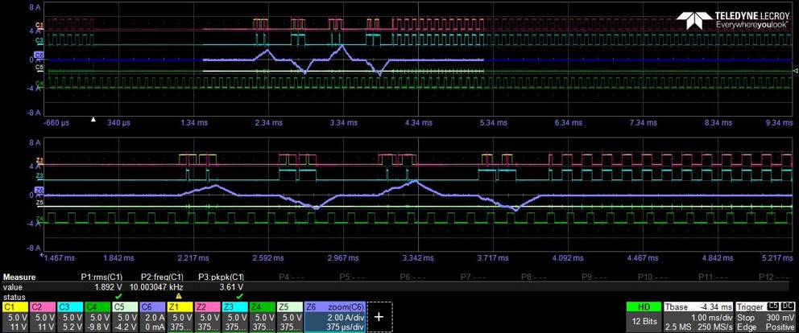

|
STM32 Motor Control SDK MCFW-6.4.1
Software Development Kit to build applications driving PMSM Motors with STM32
|
|
STM32 Motor Control SDK MCFW-6.4.1
Software Development Kit to build applications driving PMSM Motors with STM32
|
Prev: Rotor speed & position feedback ↤| Table of Contents |↦ Next: Hall sensor feedback processing
The MCSDK firmware library provides a complete solution for the sensorless motor control.
The first two methods are based on the motor Back-EMF estimation by using a Luenberger state observer. The difference between them lies in the extraction of the angle. The MCSDK library supports:
The third method called High Sensitivity Observer HSO is based on a motor flux observer from measured phase currents and voltages.
The measured currents \(i_{\alpha}\), \(i_{\beta}\) and the feeding voltages , \(v_{\alpha}\), \(v_{\beta}\) are used as input of state observer to estimate the motor back-EMF which contains the information on the rotor magnet position and therefore the speed according to the following statements:
\(\hat{E}_\alpha= |\hat{E}|\cos{\hat{\theta_r}}\)
\(\hat{E}_\beta= -|\hat{E}|\sin{\hat{\theta_r}}\)
\(|\hat{E}| = \sqrt{\hat{E}_\alpha^2 + \hat{E}_\beta^2}\)
\({\hat{\theta_r}} = {\hat{\theta_{r0}}} + \int_{t_0}^t \mathrm{\hat{\omega_r}}(\tau)\,\mathrm{d}\tau\)
Where \(\hat{E}_\alpha\), \(\hat{E}_\beta\) represent estimated B-EMF of the motor and \( |\hat{E}| = K_e\hat{\omega}_r\) its amplitude.
\(\hat{\omega}_r\) and \(\hat{\theta_r}\) represent respectively the motor electrical speed and the associated electrical angle.
At each FOC period (in current loop control) the estimated B-EMF vector \({\hat{E}_{\alpha\beta}}\) must be processed by a phase-detection algorithm in order to extract the information of the rotor magnet position and speed. As described in the block diagrams the rotor speed parameter is also provided as a feedback signal to the STate Observer itself.
Starting from a motor model, a Luenberger-like observer is used to track the motor back-EMF. Then the position and speed information can be properly extracted through the use of a phase-detection algorithm.

Hence, the differential equations describing the back-EMF observer of the estimator presented in block diagram above can be stated as follows:
$$X′(t)=AX(t)+Bu(t)+K(y(t)-Y(t))$$
\(\frac{d\hat{I}_{\alpha,\beta}(t)}{dt}= - \frac{Rs}{Ls} \hat{I}_{\alpha,\beta}(t)- \frac{\hat{E}_{\alpha,\beta}(t)}{ Ls } + \frac{ v_{\alpha,\beta}(t)}{ Ls } + {\color{green}{K_1}} [i_{\alpha,\beta}(t) - \hat{I}_{\alpha,\beta}(t)] \)
\(\frac{d\hat{E_\alpha}(t)}{dt}= \omega_r \hat{E_\beta}(t) + {\color{green}{K_2}} [i_\alpha (t)- \hat{I_\alpha}(t)] \)
\(\frac{d\hat{E_\beta}(t)}{dt}= -\omega_r \hat{E_\alpha}(t) + {\color{green}{K_2}}[i_\beta(t)- \hat{I_\beta}(t)] \)
To switch from continuous to discrete time, need to apply the sampling time period (specified as T)
Expression of Estimated Currents:
\(\hat{I}_{\alpha,\beta}(n+1)-\hat{I}_{\alpha,\beta}(n) = -\frac{Rs }{ Ls }.T.\hat{I}_{\alpha,\beta}(n)- T.\frac{ \hat{E}_{\alpha,\beta}(n)}{ Ls } + T.\frac{ v_{\alpha,\beta}(n)}{ Ls } + {\color{green}{K_1}}.T.[i_{\alpha,\beta}(n) - \hat{I}_{\alpha,\beta}(n)] \)
\(\hat{I}_{\alpha,\beta}(n+1) = \hat{I}_{\alpha,\beta}(n) -\frac{Rs }{ Ls }.T.\hat{I}_{\alpha,\beta}(n)- T.\frac{ \hat{E}_{\alpha,\beta}(n)}{ Ls } + T.\frac{ v_{\alpha,\beta}(n)}{ Ls } + {\color{green}{K_1}}.T.[i_{\alpha,\beta}(n) - \hat{I}_{\alpha,\beta}(n)] \)
\(\hat{I}_{\alpha,\beta}(n+1) = \hat{I}_{\alpha,\beta}(n) - {\color{blue}{C_1}}.\hat{I}_{\alpha,\beta}(n)- {\color{blue}{C_3}}. \hat{E}_{\alpha,\beta}(n) + {\color{blue}{C_5}} .v_{\alpha,\beta}(n) + {{\color{green}{C_2}}}.[i_{\alpha,\beta}(n) - \hat{I}_{\alpha,\beta}(n)]\)
Identification of constants \(\color{blue}{C_1, C_2, C_3, C_5}\) used in estimated currents:
\({\color{blue}{C_1}} = F_1.\frac{Rs }{ Ls }.T\)
\({\color{blue}{C_3}} =F_1.\frac{MAX\_BEMF\_VOLTAGE}{MAX\_CURRENT} \frac{T}{LS}\)
\({\color{blue}{C_5}} = F_1.\frac{MAX\_VOLTAGE}{MAX\_CURRENT}\frac{T}{LS}\)
and \({{\color{green}{C_2}}} = F1.{\color{green}{K_1}}.T\) : with \({{\color{green}{C_2}}}\) = Gain1 computed by ST Motor Control Workbench in section "Speed Sensing / Observer".
Expression of Estimated Back-EMF:
\(\hat{E_\alpha}(n+1) = \hat{E_\alpha}(n) + T.\omega_r .\hat{E_\beta}(n) + {\color{green}{K_2}}.T. [i_\alpha(n) - \hat{I_\alpha}(n)]\)
\(\hat{E_\beta}(n+1) = \hat{E_\beta}(n) - T.\omega_r .\hat{E_\alpha}(n) + {\color{green}{K_2}} .T. [i_\beta(n) - \hat{I_\beta}(n)]\)
\(\hat{E_\alpha}(n+1) = \hat{E_\alpha}(n) + T.\omega_r .\hat{E_\beta}(n) + {{\color{green}{C_4}}}.[i_\alpha(n) - \hat{I_\alpha}(n)]\)
\(\hat{E_\beta}(n+1) = \hat{E_\beta}(n) - T.\omega_r .\hat{E_\alpha}(n) + {{\color{green}{C_4}}}.[i_\beta(n) - \hat{I_\beta}(n)]\)
With the constant \(\color{green}{C_4}\) equal to:
\({{\color{green}{C_4}}} = F_2.\frac{MAX\_CURRENT}{MAX\_BEMF\_VOLTAGE}{\color{green}{K_2}}.T\) : with \({{\color{green}{C_4}}}\) = Gain2 computed by ST Motor Control Workbench in section "Speed Sensing / Observer".
As shown here the tuning of the observer is allowed only via Gain1 and Gain2 gains which are pre-computed by ST Motor Control Workbench (as described below).
Initial values of gains \( {\color{green}{K_1}}\) and \( {\color{green}{K_2}}\) are based on motor parameters \(R_s\), \(L_s\) and \(T\) (which is the sampling time of the sensorless algorithm, which coincides with FOC and stator currents sampling).
The motor model eigenvalues could be calculated as:
\(e_1 = 1 - \frac{R_sT}{L_s}\)
\(e_2 = 1\)
The observer eigenvalues are placed with:
\(e_{1obs} = \frac{e_1}f\)
\(e_{2obs} = \frac{e_2}f\)
As a rule of the thumb, set \(f = 4\);
The initial values of \({\color{green}{K_1}}\) and \({\color{green}{K_2}}\) are then calculated:
\({\color{green}{K_1}} = \frac{(e_{1obs} + e_{2obs}) - 2}{T} - \frac{R_s}{L_s}\)
\({\color{green}{K_2}} = \frac{L_s(1 - e_{1obs} - e_{2obs} + e_{1obs}e_{2obs})}{T^2}\)
Then Gain1 and Gain2 are computed by applying an appropriated scaling ( \(F_1\) & \(F_2\) ) and the maximum ranges of functionality defined by the following constants: MAX_CURRENT, MAX_VOLTAGE and MAX_BEMF_VOLTAGE (computed internally by the ST Motor Control Workbench according to the project definition).
This procedure is followed by the ST Motor Control Workbench to calculate proper state observer gains.
The basic principle of this algorithm refers to a quadrature phase detector and involves the generation of an error signal from the phase difference between a couple of quadrature input signals corresponding to the couple ( \({\hat{E}_{\alpha}}\) , \({\hat{E}_{\beta}}\) ) and the corresponding quadrature feedback functions of the estimated angle \(\hat{\theta_r}\) as shown in block diagram below:

Estimated B-EMF expression:
\(\hat{E}_\alpha=K_e\tilde{\omega}_r\cos{\tilde\theta_r}\)
\(\hat{E}_\beta=-K_e\tilde{\omega}_r\sin{\tilde{\theta_r}}\)
\(K_e\) represents the Back-EMF constant and \(\tilde{\omega}_r, \tilde{\theta}_r\) the pulsation and the phase angle of the estimated Back-EMF.
Then according to the block diagram of PLL, the math expression of the error signal \({\epsilon}\) is:
\({\epsilon} = -\hat{E}_\alpha.sin\hat{\theta}_r - \hat{E}_\beta.cos\hat{\theta}_r \)
And by replacing the expression of estimated Back-EMF it becomes: \({\epsilon} = -K_e\tilde{\omega}_r\cos{\tilde\theta_r}.sin\hat{\theta}_r + K_e\tilde{\omega}_r\sin{\tilde{\theta_r}}.cos\hat{\theta}_r \) By applying the trigonometric formula: sin(a-b) = sin(a).cos(b) - sin(b).cos(a)
The equation of the error can be factorized to: \({\epsilon} = K_e\tilde{\omega}_r\sin(\tilde\theta_r - \hat{\theta}_r) \)
With \(\tilde\theta_r\), representing the input reference while \(\hat\theta_r\) corresponds to the feedback signals (ie estimated electrical angle).
For small deviations between those angles, the error expression can be approximated to: \( \mathbf{{\epsilon\approx K_e\tilde{\omega}_r(\tilde\theta_r - \hat{\theta}_r) }}\)
A Proportional Integrator (PI) regulator is used to ensure that the estimated electrical angle \(\hat\theta_r\) converge to the phase angle of the input B-EMF signal \(\tilde\theta_r\) (by keeping the error \({\epsilon} \) = 0)
CORDIC (COordinate Rotation DIgital Computer) is a cost-efficient successive approximation algorithm for evaluating math functions like trigonometric functions.
Current mcsdk library offers a software implementation of atan function : \(\hat\theta_r =atan( \frac{-\hat{E}_\beta}{\hat{E}_\alpha})\)
And in G4 series, in order to reduce the SW computation time a CORDIC co-processor is available supporting several mathematical functions including all trigonometric functions.
The electrical angle based on the estimated back-EMF components is then extracted instantaneously, but this method is more sensitive to the quality and the level of the waveforms.
As stated in the introduction, HSO requires the three phase currents and voltages to perform angle and speed estimation. The block diagram below describes the input and output signals of the algorithm.
A Startup guide documentation for HSO is reachable through HSO Startup Guide.
Back-emf \(e\) (in stationary coordinates: \(e_{\alpha\beta}\)) can be calculated from measured terminal voltages \(u_s\) and motor currents \(i_s\) with knowledge of stator resistance \(R_s\) and inductance \(L_s\) using (3). Besides valid values for \(R_s\) and \(L_s\), pure differentiation and perfect voltage and current signals are needed in this case. Equation (2) implies that a correct value of \(e\) results to get a correct estimation of magnet \(\psi_{mag}\).
Back-emf is then integrated to get \(\psi_{\alpha\beta}\) which will be used to estimate the angle thanks to G4 CORDIC peripheral. Speed is computed as the derivative of the angle.
HSO can also make usage of the PolPulse algortihm to determine the position of the rotor at startup. Indeed, the Polarity detection through Pulsing feature improves significantly the startup time of the motor compared to a basic alignment. It also avoid any movement of the rotor before startup.
The method to configure the PolPulse is described here:
By using the MC Pilot GUI, the interface allows to find the correct settings to configure the pulses generation to help the algorithm to determine the actual angle of a near-stand-still machine.

GUI parameters description:
• Pulse duration (NB_PULSE_PERIODS): number of PWM periods to reach the current goal.
• Decay time (NB_DECAY_PERIODS): number of PWM periods for the current to decay.
It depends on Ls of motor, can be tuned after checking on oscilloscope. When decay is finished the currents should be zero, if not increase Nd.
• Pulse current goal: level of pulse current expected.
The level of pulse current must be set depending on the motor type. By default, it is set to \(\frac{1}{4}\) of the short circuit current and limited to the board soft overcurrent trip value (BOARD_SOFT_OVERCURRENT_TRIP). This level can be tuned only be modifying the PulseCurrentGoal_A value (expressed in Ampere) which can be found in the routine MC_POLPULSE_init() in the file mc_polpulse.c.
• PulseDuty: Computed duty according to input user settings. The limit is 0.98 and shall be checked when modifying the pulse duration and the pulse current goal. A negative reported value means that user settings result in a saturation of duty. In that case, a new iteration of tuning will be required.

In this example the pulse duration (N) is 2, the decay time (Nd) is 2. The current pulses is plot in channel 6.
Prev: Rotor speed & position feedback ↤| Table of Contents |↦ Next: Hall sensor feedback processing